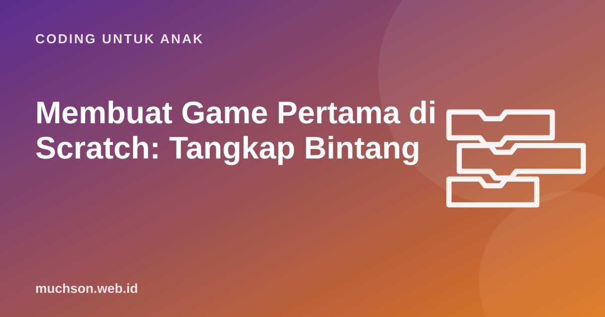

Beranda › Artikel › Coding untuk Anak
Coding untuk AnakMembuat Game Pertama di Scratch: Tangkap Bintang
Game pertama adalah momen yang sering membuat anak jatuh cinta pada coding. Tutorial ini membimbing langkah demi langkah membuat Tangkap Bintang: pemain bergerak dengan panah, bintang jatuh dari langit, skor bertambah, dan game selesai saat nyawa habis. Cocok untuk anak 8-11 tahun dengan pendampingan, sekitar 60-90 menit.

Rencanakan dulu sebelum menyusun blok
Programmer game tidak langsung menyusun kode. Mereka membuat rancangan sederhana. Ajak anak mengisi rancangan ini dulu, di kertas atau di kolom berikut:
Langkah 1: siapkan panggung dan sprite
- Buka scratch.mit.edu, klik Buat, ubah bahasa ke Indonesia.
- Pilih latar: klik ikon latar di kanan bawah, cari "Stars" atau latar langit malam.
- Hapus kucing bila tidak dipakai, lalu tambahkan sprite pemain, misalnya "Bowl" (mangkuk) dari pustaka.
- Tambahkan sprite Bintang ("Star") dari pustaka.
- Buat dua variabel di kategori Variabel: skor dan nyawa, untuk semua sprite.
Langkah 2: pemain bergerak
Uji sekarang. Tekan bendera hijau lalu panah kiri dan kanan. Pemain bergerak? Bagus. Kalau terlalu lambat atau cepat, ubah angka 8. Kenapa memakai "jika tombol ditekan" di dalam loop, bukan blok "ketika tombol ditekan"? Karena cara ini membuat gerakan lebih halus saat tombol ditahan.
Langkah 3: bintang jatuh dari posisi acak
Skrip ini memuat hampir semua konsep dasar sekaligus: loop selamanya, loop "ulangi sampai", percabangan, variabel, dan angka acak. Jangan khawatir bila anak belum paham semuanya. Ajak ia membaca skripnya seperti cerita: "Selamanya, bintang pergi ke atas di tempat acak, lalu turun sampai bawah. Kalau di jalan menyentuh mangkuk, skor bertambah."
Angka acak membuat game tidak membosankan karena bintang muncul di tempat berbeda setiap kali. Tanpa acak, pemain cukup diam di satu tempat.
Langkah 4: akhir permainan
Uji seluruh game. Ajak anggota keluarga mencoba. Perhatikan reaksi mereka: terlalu mudah? Terlalu sulit? Mengamati orang lain bermain adalah cara terbaik menemukan hal yang perlu diperbaiki. Pengembang game profesional menyebutnya playtesting.
Bug yang sering muncul
Ide pengembangan untuk anak
Setelah game dasar jalan, biarkan anak memodifikasinya sesuai idenya sendiri. Di sinilah kreativitas tumbuh.
Satu game yang dikembangkan bertahap jauh lebih bermakna dibanding sepuluh game yang disalin dari video. Pendekatan ini yang dipakai di PixelKode: game Tangkap Bintang dibangun dari versi 1 (gerakan) sampai versi 3 (skor, nyawa, waktu) seiring anak mempelajari konsep baru.